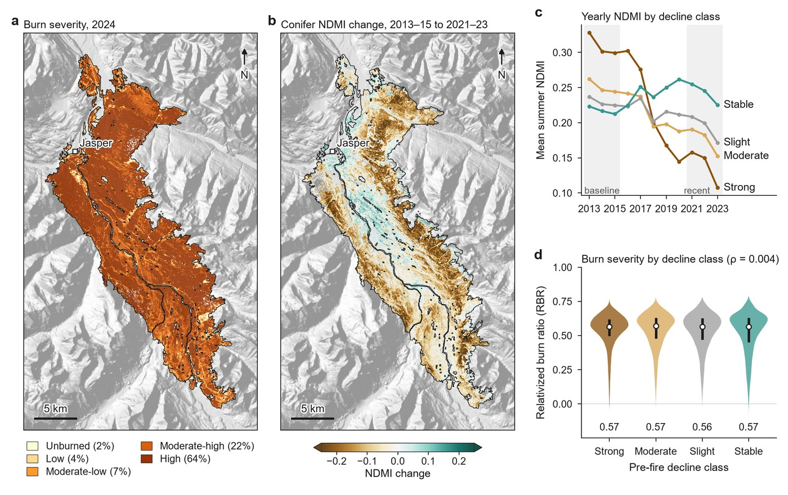
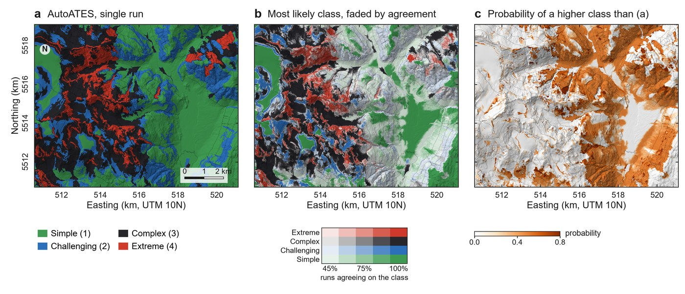
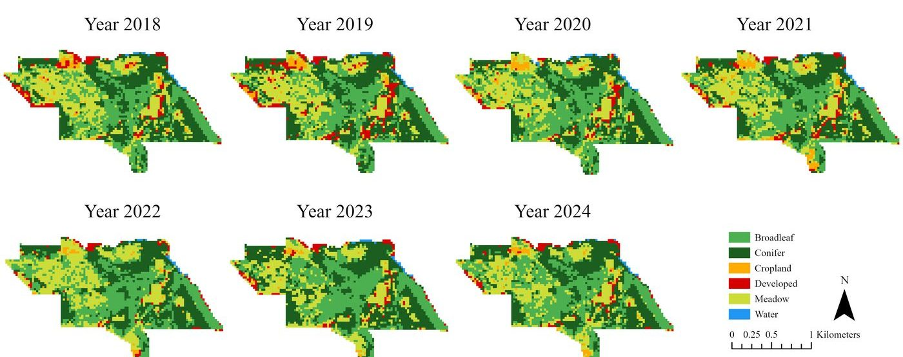

I work at Opta Information Intelligence, a Verisk company, where I write the Python that turns municipal open data into standard civic address and parcel layers for Canadian provinces and territories, and the checks that stop a bad update before anyone uses it.
Before that I studied geography at South China Normal University and geomatics at the University of British Columbia.
Work
GIS Developer, Opta Information Intelligence
2025 – present
Maintain the Python and ArcPy pipelines behind civic address layers for 11 provinces and territories and parcel layers for 10.
Adapt field mappings as municipal schemas change, and source municipal open data where provincial coverage has gaps.
Write QA scripts that flag a source when its numbers fall outside per-source thresholds. Flags are reviewed by hand before anything is reprocessed.
Added a check that stops a run on empty output, after tracing an Alberta layer that came out empty with no error.
Traced how the team's two-way AWS S3 sync could overwrite colleagues' updates, and built a safer way to sync one geodatabase at a time.
Planning intern, Guangzhou
2023
Mapping and UAV data processing at the Guangzhou Urban Planning and Design Institute, then a summer checking parcels against regulatory plans at the city's planning and natural resources bureau.
Downloads civic address points from public municipal ArcGIS services, maps each city's schema onto one standard, and runs quality checks before the output is used. On Thunder Bay's 45,102 addresses the parser agrees with the city's own split fields on 99.95% of rows. Most of the rest turned out to be records where the city's fields disagree with each other.
Mountain pine beetle had killed much of the pine around Jasper before the 2024 wildfire, and I wanted to know whether those stands burned more severely. I mapped burn severity from Sentinel-2, pre-fire decline from eleven years of Landsat, and canopy loss from the 1 m LiDAR flown before and after the fire, then ran the same workflow on the 2023 McDougall Creek fire above West Kelowna. In neither fire did declined stands burn more severely, and adding decline to models that already had terrain, stand structure and fire weather improved them by about 0.02 R² on land they had not seen. The second fire showed that in a logged forest the decline map mostly finds clearcuts, so harvested areas now come out first. Google’s AlphaEarth embeddings predicted severity slightly better than my own predictors in both fires. The decline maps have not been checked against field surveys.

Jasper: burn severity, pre-fire change in conifer moisture, and how the two compare.
AutoATES rates avalanche terrain from an elevation model and a forest layer, and gives each cell one class with no sense of how far to trust it. I reran the whole chain a few hundred times with perturbed inputs to get a probability for each class, for a block of the BC Coast Mountains, then checked those probabilities against a lidar-based run and two expert benchmark maps. Runs that agree with each other turn out to agree with the experts more often: 83% and 92% of the time where over nine runs in ten agree, against 59% and 63% where only half to seven in ten do. A research exercise, not something to plan a route with.

One AutoATES run, the ensemble's most likely class faded by agreement, and the chance the class is higher.
Land cover change at Cable Bay, BC
UBC, 2024–2025
Classified Sentinel-2 imagery for each year from 2018 to 2024 with a Random Forest model in Python (97.0–98.6% overall accuracy), then used transition matrices and Getis-Ord Gi* hotspots to see where forest and meadow were giving way to development.

Annual land cover, 2018–2024.
Salmon access on eastern Vancouver Island
UBC coursework
Derived a stream network from a DEM in ArcGIS Pro for the Georgia Strait conservation unit and marked which reaches salmon can still reach from the ocean. With 89 dams in the area, 11,450 stream segments came out accessible and 7,174 cut off.
A static, installable page for each trip: day-by-day plans on a Leaflet map, booking countdowns, cost splitting and calendar export, all usable offline. A shared engine checks each trip's content before the page loads. Live site.